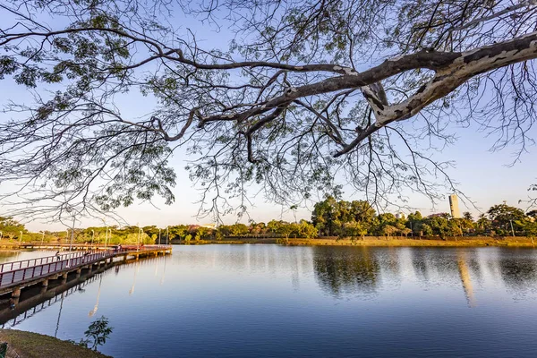

Poema
No coração do cerrado mineiro,
ergue-se Uberlândia,
cidade de ventos largos
e horizontes abertos.
Entre rios que cantam memórias
e avenidas que guardam pressa,
vive o calor humano
que abraça como tarde de sol.
O verde insiste nas praças,
nas margens do Uberabinha,
lembrando que a vida floresce
mesmo no concreto que cresce.
Uberlândia é encontro:
de tradição e modernidade,
do campo que alimenta o mundo
e da juventude que reinventa o futuro.
Cidade que respira trabalho,
mas também dança no batuque das noites,
onde a esperança é sertaneja
e o coração, mineiro.